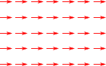

まず、力は何らかのベクトル
f
で表すことができそうである。実際、重力であれば、「鉛直下方向を向き、重い物体ほど大きい」というふうに、向きと大きさを持っている。重力を
fg
と書くことにすれば、
fg
は重力加速度
g
の方向を向くので、物体に依存するある係数
w
を用いて
fg=wˆg(2)
と書けるはずである。ˆg
は、
g
を単位ベクトル化したものである：
ˆg=g/|g|
。
係数
w
は、重力の大きさそのものであるが、「重力の大きさ」とは、身近な言葉でいえば「重さ」に他ならない。任意の物体の「重さ」は、天秤を使って【注2.1】のように量れることが知られているので、この値を
w
として採用するのが自然だろう。
重力が定量化できたので、次は一般の力
f
の場合である。f
の向きは直観的に明らかだろうから、知りたいのは
f
の大きさをどう決めるかである。重力の定義をもとに
f
の定量化を行いたいので、重力と
f
の釣り合いを考えてみよう。右図のように、重力
fg
が働いている物体を持ち上げ、そのまま静止させる。このとき、物体を持ち上げるためにかけている力
f
は、重力と釣り合っている。ということは単純に考えれば、
f+fg=0
とできるのではないだろうか。つまりこのとき、
f
は
f=−fg(3)
と定義できるのではないか。
重力(2)（
fg=wˆg
）を用いて、キャッチボールの運動方程式(1)（
¨x=g
）を書きなおしたい。そのためには、重さ
w
に比例する量
m
を
m=w/|g|
と定義することにして、この
m
を運動方程式(1)の両辺に掛ければよい：
m¨x=fg(4)
なお、重力
fg
を
m
を用いて書きなおしておくと、以下のようになる：
fg=mg
重力以外の力についても成り立つように式(4)を拡張したいのだが、最も単純なのは、「式(4)が一般の力
f
についても成り立ち、しかも
m
が物体に固有の値となる（＝力の種類によらない）」場合である。もしこれが成り立つのであれば、
f
さえ等しければ、どのような種類の力であっても、同じ物体は同じ加速度を受けることになる。逆に、成り立っていなければ、同じ物体に同じ力
f
をかけたとしても、力の種類によって加速度が異なることになる。どちらが正しいかは、実験を重ねることで検証すべきものであるが、直観的には成り立っていそうである。これを認めることにしよう。なお、複数の力
f1,f2,…
が働いている場合には、力の加法性により
f=f1+f2+⋯
と置き換えればよいものとする。
以上により、力
f
と加速度
¨x
を結びつける関係式は
m¨x=f(5)
である。これが求めたかった式であり、「ニュートンの運動方程式」もしくは単に「運動方程式」という。この式が言っていることは、
f
を例えば2倍にすると加速度も2倍になる、あるいは、
m
を2倍にすると同じ力を加えても半分の加速度しか発生しない（＝動かしにくくなる）ということであり、直観的にももっともらしい。
物体に固有の量
m
を質量と呼び、重さに比例するように定義したので、加法性を持つ。質量の単位はkgとし、「
x
kg重の重力を受ける物質」の質量が、
x
kgとなるように定義する。一方、
f
の単位は、式(5)の左辺のそれと一致しなければならないので、kgm/s2
である。なお、運動方程式(5)は、質量
m
と力
f
を定量する手段も与えているので、これまでのように重力を経由する必要はなくなる（【注2.2】）。
未知の力
f
を定量するには、
f
をAに作用させればよい。その時の加速度
¨x
を測定すれば、
f
は、
f=mA¨x
となる。
未知の質量
m
を定量するには、すでに定量されている（
0
でない任意の）力
f
を、対象となる物体にかければよい。その時の加速度
¨x
を測定すれば、
m
は、
m=|f|/|¨x|
となる。
力の例
力
f
が分かれば、初期値
x0,˙x0
のもとで、運動方程式(5)を解くことにより、
x(t)
が計算できる。ここでは、最も単純な2つの例：「一定の力」と「1次の力」を取り上げる。
一定の力

もっとも単純なのは
f
が定数の場合、即ち、時間や位置などによらず常に一定の力で押されて（引かれて）いる場合である。（右図はベクトル場と呼ばれるもので、「物体の位置に応じてどのような力が働くか」が矢印で示されている。これを見れば、物体がどこにあっても同じ力が働くことが一目瞭然である。）運動方程式は、
m¨x=f=const.(6)
であり、この解析解は【注2.2】のようになる（重力の場合とほとんど同じである）。
次に単純なのは、力
f
が
x
の1次式
f=kx
で表される場合である（簡単のため、
x
軸上の1次元運動を考える）：
m¨x=kx(7)k
が負のときには原点に引きつけようとする力になり、振動するような運動になる。
k
が正のときには原点から引き離そうとする力になり、原点から加速度的に離れていく運動になる。力が働かなくなる点
x=0
を、釣合いの位置という。解析解は【注2.3】のようになる。
数値計算を行うと右図のようになる。
この種の力は、微小振動を考える際によく現れる。そのことを見るために、釣合いの位置
x=0
の周りで、
x
のみに依存する力
f(x)
を受けて振動している物体を考える。
x
が十分小さい範囲にとどまっている場合、
f(x)
は、釣合の位置
x=0
の周辺で、以下のように1次近似できる（
f(0)=0
に注意）：
f(x)≐f(0)+f′(0)⋅x=f′(0)⋅x
これは確かに
f=kx
の形になっている。ただし
f′
は
x
での微分である：
f′=df/dx
（
˙a
は時間微分を表し、
a′
は空間微分を表すのが一般的である）。